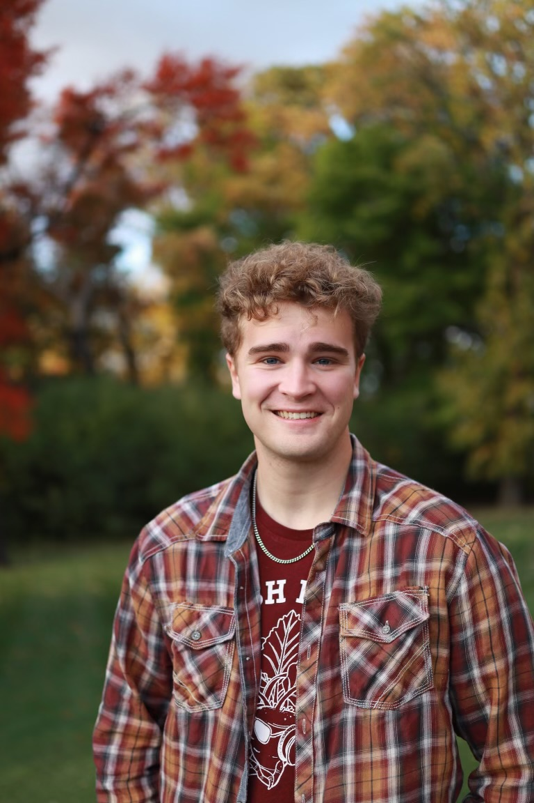
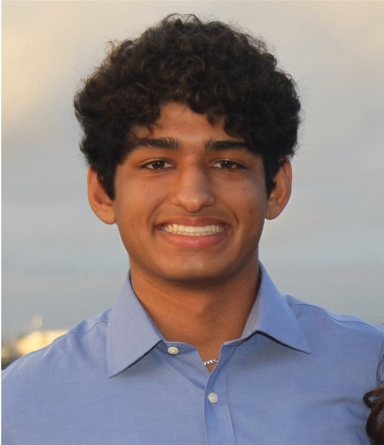
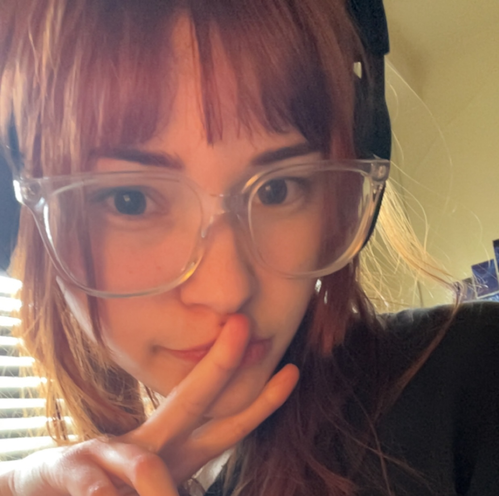

Meet the Board!

President: Reed Blocksome blocksom@msu.edu
Hey! Nice to see you here. I am a materials science junior and undergraduate researcher in the amazing Szczepanski Group where I investigate some of the interesting physics behind hydrogels. Outside of class I row for the MSU Crew team and compete on the national level. I also have two big cats named Tatiana and Ruslan.
Hometown: Rochester Minnesota
Skills: Foraging
Weaknesses: Sweets
Favorite Things: Skyr, Berries, Honey, Ginger Beer
Weapon of Choice: Mace

Vice President: Lily Velez-Lewis

 velezlil@msu.edu
velezlil@msu.edu
Hey, hope to see you at a meeting! I am a materials science junior doing a concentration in metallurgy and minor in geophysics. Currently, I am working in the Dorfman Mineral Physics lab where I study how iron concentrations in deep earth minerals affect seismic wave velocities, along with a side project at Arizona State University studying impact meteor crater dating! Outside of work, I am usually forging, exploring, or spending time with my dog, Fozzie.
Hometown: Aurora, IL
Skills: Basket Weaving
Weakness: Homework
Favorite Things: Mangos, Bread, Music, Hiking
Weapon of Choice: Machete

Treasurer: Ashwin Banipal banipala@msu.edu
Hello! I am a junior studying mechanical engineering with a focus on biomedical engineering. In addition I have a lot of experience with structural and civil engineering. In my free time I tend to enjoy working on crafts like model kits and origami, as well as reading.
Hometown: Los Angeles, California
Skills: Construction
Weakness: Procrastination
Favorite things: blueberries, lemonade, nature
Weapon of choice: Spear

Secretary: Lily Skowronski skowro36@msu.edu
Hey hey, welcome! I'm a Civil Engineering 👷 senior here at MSU, and you might see me around with the Civil and Environmental Honor Society; I am the secretary there as well :p . Outside of school I love cooking up all sorts of crafty things and playing video games (I'm not good at them though). My cat Joe is my pride and joy so you should definitely ask me about him!!
Hometown: Clinton Township, Michigan
Skills: Dragon of Dojima Reborn
Weaknesses: Statistics
Favorite Things: Ice cream, coffee, building furniture, mechanical keyboards
Weapon of Choice: Shovel

Faculty Advisor: Dr. Tyler Johnson john4369@msu.edu
Dr. Tyler Johnson provides guidance on metallurgy and safety, ensuring the club maintains high academic and practical standards.
Hometown: The Himalayan Peaks
Skills: Metallurgy
Weaknesses: Low Altitudes
Favorite Things: Ancient Manuscripts, Rare Ores
Weapon of Choice: Claymore